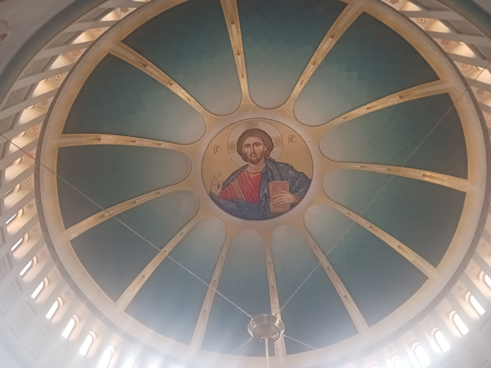
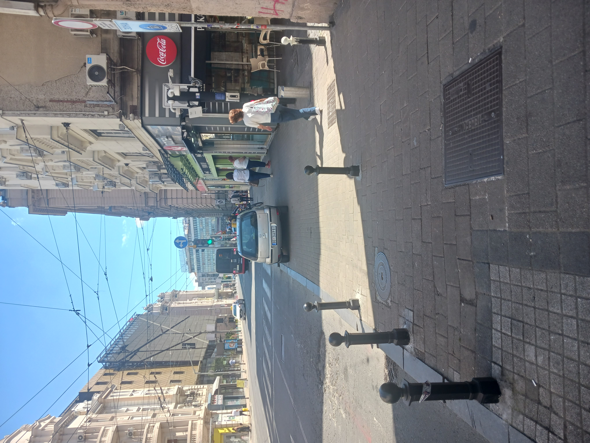
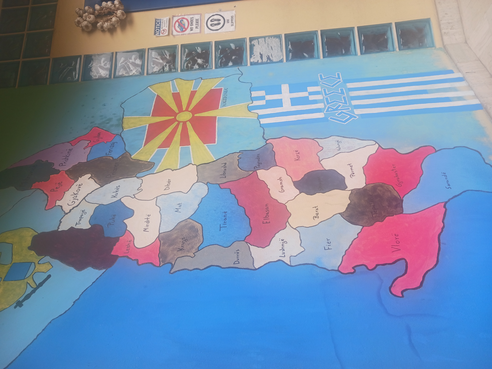
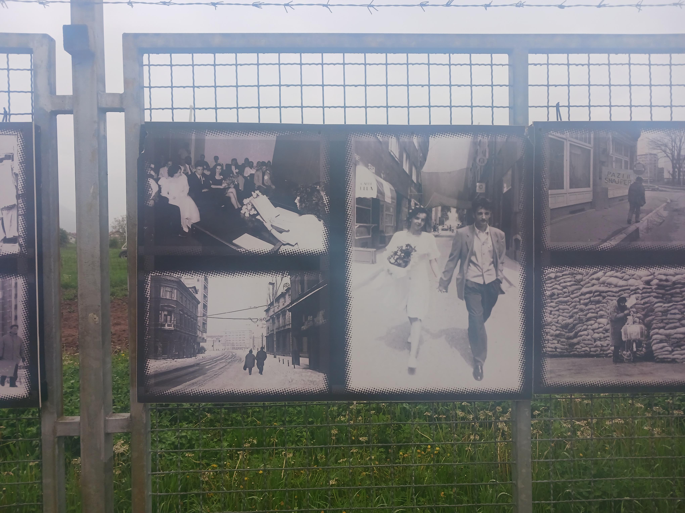

"Visited" means anywhere I set foot, regardless of how long I was there.
I didn't do a ton in Istanbul (I underestimated just how much time I needed to do nothing for a while), but I did take a couple days to tour Dolmabache Palace, visit the Grand Bazaar, and take an evening cruise on the Bosporus. The last activity didn't have a strong start, but the evening was saved by the best belly dancer I've ever seen and an unnamed breakout star who started dancing to Gangnam Style. I'm not sure who this is, but he has my respect.
I didn't do much in Sofia either (this was mostly intended as a pit stop before I headed to Albania). Most of my time was spent on life admin (researching tours, scheduling appointments, filing my taxes, etc.), but I did have time for a couple cultural excursions, including a walking tour dedicated to exploring the country's communist history, a 45-year period that's only now being taught in schools (albeit near the end of the school year, when students have basically turned off their brains).
Easily the highlight of this trip. For such a small country (pop. roughly 3 million), Albania has a lot to offer geographically, including mountains in the north, beaches in the south, and castles and UNESCO sites (and bunkers) all throughout the country. I could easily make another trip out of everything I didn't see this time around.
There are still scars from Albania's harsh communist history, but the country has opened up since then and has a lot to offer now, especially regarding tourism opportunities. Probably the most striking thing is the cultural mixing - unlike other cities that have a part of town for tourists and a part of town for locals, the spots I visited were populated by both tourists. There's a similar vibe regarding religious buildings — here there's a church, a few blocks down is a mosque, etc. I found out later that's very common in this part of the world. For all the ethnic tension that still exists today, when it comes to religion, people are free to worship (or not) where and how as they please without fear of persecution.
The most metropolitan city I visted. Big city vibes (and traffic to match), but with laid-back people for the most part (my Airbnb host sayd the general vibe of Serbians is "don't bother us and we won't bother you"). My very generous Airbnb host Milos took me on a tour of his favorite spots my first day, but for the most part I stuck to my planned list of activites (Nikola Tesla Museum, Belgrade Fortress, etc.). I was very close to the city center, which was both convenient (steps away from several restaurants, bus lines, etc.) and slightly annoying (lots of crowds and constant vehicle-related noises). This felt like the most "normal" part of the trip — I was working more or less my regular schedule, along with typical life admin (going to the dentist, clothes shopping, etc.). On my last day, I caught a mini-cab from Slavija Square to the airport with no trouble - a smooth ending to an overall smooth trip.
Kosovo declared its independence from Serbia in 2008, but most citizens (>90%) are ethnically Albanian. Back in Ottoman Empire times, Albanians were scattered across what is modern-day Albania, Kosovo, Montenegro, and North Macedonia. When Albania officially declared independence in 1912, representatives requested all territories inhabited by Albanians, but received just a portion of what they asked for (i.e., Albania's current territory), creating a regional Albanian diaspora.
The US has a pretty good reputation in this part of the world, mostly due to Bill Clinton's role in NATO's bombing of Yugoslavia (which precipitated the end of the Kosovo War) in 1999. Kosovars LOVE Bill Clinton - I didn't see it when I was there, but apparently there's a statue of him in Pristina (the capital city), along with at least one street named after him. Not what I think of when I think of Bill Clinton, but I'll happily ride his coattails.
Sarajevo is most well-known for two events, both unfortunately related to war and bloodshed. The first is the assassination of Franz Ferdinand and his lovely wife Sophie (the main cause of World War 1). According to my tour guide, there were several things that went wrong and led to Ferdinand's death, but it probably would have behooved him not to announce his travel schedule months in advance (thereby giving his opps both his exact location and plenty of time to plot). The second is as a sieged city during the Bosnian War, an event which lasted almost four years and was rife with war crimes. There are several war memorials throughout the city, and given that it ended about 30 years ago, many people alive today (including our tour guide, who served in the war) still remember the terror and uncertainty of those days. The bombing was extensive — several buildings in town are riddled with bullet holes, and there are landmine warnings throughout the country. We saw footage of people going about their days, only to start running for their lives as war planes swooped in and dropped bombs overhead. Unsurprisingly, many still have lingering trauma and PTSD from those times.
While things haven't fully been resolved (there's still some ethnic tension between Serbs and Bosniaks), my tour guide said there's peace for now. After his military service, he decided to share his experiences with others and advocate ambassador for peace. He says his number one priority now is to work toward a more peaceful society. To that I say: right on.